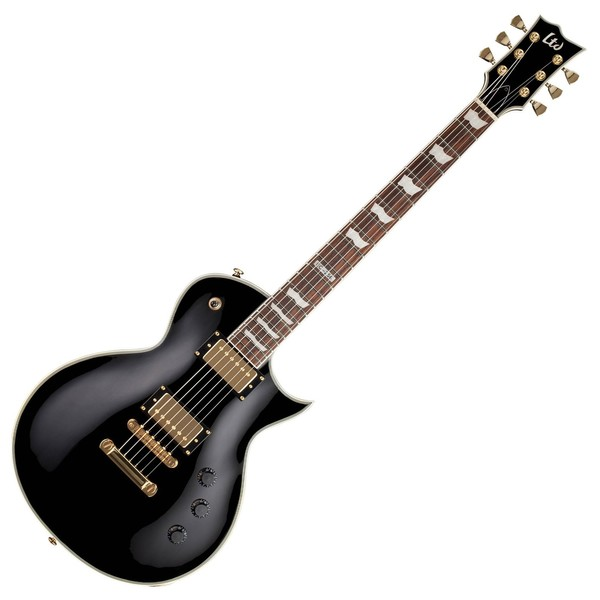

See lehekülg aitab algajatele muusikutele valida enda esimest elektrikitarri. Lisaks vaatleme ka erinevate hindadega instrumenti, et iga eelvega muusik saaks endale midagi valida.

| Kitarri mudel | Hinnadevahemik | Kellele sobib |
|---|---|---|
| Squier Stratocaster | 150€ - 250€ | Funk |
| Ibanez RG | 150€ - 250€ | Rock\metal |